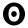

This article is one of two Distill publications about graph neural networks.
Take a look at
A Gentle Introduction to Graph Neural Networks
Many systems and interactions - social networks, molecules, organizations, citations, physical models, transactions - can be represented quite naturally as graphs. How can we reason about and make predictions within these systems?
One idea is to look at tools that have worked well in other domains: neural networks have shown immense predictive power in a variety of learning tasks. However, neural networks have been traditionally used to operate on fixed-size and/or regular-structured inputs (such as sentences, images and video). This makes them unable to elegantly process graph-structured data.

Graph neural networks (GNNs) are a family of neural networks that can operate naturally on graph-structured data. By extracting and utilizing features from the underlying graph, GNNs can make more informed predictions about entities in these interactions, as compared to models that consider individual entities in isolation.
GNNs are not the only tools available to model graph-structured data:
graph kernels
In this article, we will illustrate the challenges of computing over graphs, describe the origin and design of graph neural networks, and explore the most popular GNN variants in recent times. Particularly, we will see that many of these variants are composed of similar building blocks.
First, let's discuss some of the complications that graphs come with.
The Challenges of Computation on Graphs
Lack of Consistent Structure
Graphs are extremely flexible mathematical models; but this means they lack consistent structure across instances.
Consider the task of predicting whether a given chemical molecule is toxic


Looking at a few examples, the following issues quickly become apparent:
- Molecules may have different numbers of atoms.
- The atoms in a molecule may be of different types.
- Each of these atoms may have different number of connections.
- These connections can have different strengths.
Representing graphs in a format that can be computed over is non-trivial, and the final representation chosen often depends significantly on the actual problem.
Node-Order Equivariance
Extending the point above: graphs often have no inherent ordering present amongst the nodes. Compare this to images, where every pixel is uniquely determined by its absolute position within the image!
As a result, we would like our algorithms to be node-order equivariant: they should not depend on the ordering of the nodes of the graph. If we permute the nodes in some way, the resulting representations of the nodes as computed by our algorithms should also be permuted in the same way.
Scalability
Graphs can be really large! Think about social networks like Facebook and Twitter, which have over a billion users. Operating on data this large is not easy.
Luckily, most naturally occuring graphs are 'sparse': they tend to have their number of edges linear in their number of vertices. We will see that this allows the use of clever methods to efficiently compute representations of nodes within the graph. Further, the methods that we look at here will have significantly fewer parameters in comparison to the size of the graphs they operate on.
Problem Setting and Notation
There are many useful problems that can be formulated over graphs:
- Node Classification: Classifying individual nodes.
- Graph Classification: Classifying entire graphs.
- Node Clustering: Grouping together similar nodes based on connectivity.
- Link Prediction: Predicting missing links.
- Influence Maximization: Identifying influential nodes.

A common precursor in solving many of these problems is node representation learning: learning to map individual nodes to fixed-size real-valued vectors (called 'representations' or 'embeddings').
In Learning GNN Parameters, we will see how the learnt embeddings can be used for these tasks.
Different GNN variants are distinguished by the way these representations are computed. Generally, however, GNNs compute node representations in an iterative process. We will use the notation $h_v^{(k)}$ to indicate the representation of node $v$ after the $k^{\text{th}}$ iteration. Each iteration can be thought of as the equivalent of a 'layer' in standard neural networks.
We will define a graph $G$ as a set of nodes, $V$, with a set of edges $E$ connecting them. Nodes can have individual features as part of the input: we will denote by $x_v$ the individual feature for node $v \in V$. For example, the 'node features' for a pixel in a color image would be the red, green and blue channel (RGB) values at that pixel.
For ease of exposition, we will assume $G$ is undirected, and all nodes are of the same type.
Sometimes we will need to denote a graph property by a matrix $M$, where each row $M_v$ represents a property corresponding to a particular vertex $v$.
Extending Convolutions to Graphs
Convolutional Neural Networks have been seen to be quite powerful in extracting features from images. However, images themselves can be seen as graphs with a very regular grid-like structure, where the individual pixels are nodes, and the RGB channel values at each pixel as the node features.
A natural idea, then, is to consider generalizing convolutions to arbitrary graphs. Recall, however, the challenges
listed out in the previous section: in particular, ordinary convolutions are not node-order invariant, because
they depend on the absolute positions of pixels.
It is initially unclear as how to generalize convolutions over grids to convolutions over general graphs,
where the neighbourhood structure differs from node to node.
We begin by introducing the idea of constructing polynomial filters over node neighbourhoods, much like how CNNs compute localized filters over neighbouring pixels. Then, we will see how more recent approaches extend on this idea with more powerful mechanisms. Finally, we will discuss alternative methods that can use 'global' graph-level information for computing node representations.
Polynomial Filters on Graphs
The Graph Laplacian
Given a graph $G$, let us fix an arbitrary ordering of the $n$ nodes of $G$. We denote the $0-1$ adjacency matrix of $G$ by $A$, we can construct the diagonal degree matrix $D$ of $G$ as:
where $A_{vu}$ denotes the entry in the row corresponding to $v$ and the column corresponding to $u$ in the matrix $A$. We will use this notation throughout this section.
Then, the graph Laplacian $L$ is the square $n \times n$ matrix defined as:
The graph Laplacian gets its name from being the discrete analog of the Laplacian operator from calculus.
Although it encodes precisely the same information as the adjacency matrix $A$
Polynomials of the Laplacian
Now that we have understood what the graph Laplacian is,
we can build polynomials
These polynomials can be thought of as the equivalent of 'filters' in CNNs, and the coefficients $w$ as the weights of the 'filters'.
For ease of exposition, we will focus on the case where nodes have one-dimensional features: each of the $x_v$ for $v \in V$ is just a real number. The same ideas hold when each of the $x_v$ are higher-dimensional vectors, as well.
Using the previously chosen ordering of the nodes, we can stack all of the node features $x_v$ to get a vector $x \in \mathbb{R}^n$.
Once we have constructed the feature vector $x$,
we can define its convolution with a polynomial filter $p_w$ as:
At this point, a natural question to ask is:
How does the degree $d$ of the polynomial influence the behaviour of the convolution?
Indeed, it is not too hard to show that:
Effectively, the convolution at node $v$ occurs only with nodes $u$ which are not more than $d$ hops away. Thus, these polynomial filters are localized. The degree of the localization is governed completely by $d$.
To help you understand these 'polynomial-based' convolutions better, we have created the visualization below. Vary the polynomial coefficients and the input grid $x$ to see how the result $x'$ of the convolution changes. The grid under the arrow shows the equivalent convolutional kernel applied at the highlighted pixel in $x$ to get the resulting pixel in $x'$. The kernel corresponds to the row of $p_w(L)$ for the highlighted pixel. Note that even after adjusting for position, this kernel is different for different pixels, depending on their position within the grid.
Hover over a pixel in the input grid (left, representing $x$) to highlight it and see the equivalent convolutional kernel for that pixel under the arrow. The result $x'$ of the convolution is shown on the right: note that different convolutional kernels are applied at different pixels, depending on their location.
Click on the input grid to toggle pixel values between $0$ (white) and $1$ (blue). To randomize the input grid, press 'Randomize Grid'. To reset all pixels to $0$, press 'Reset Grid'. Use the sliders at the bottom to change the coefficients $w$. To reset all coefficients $w$ to $0$, press 'Reset Coefficients.'
ChebNet
ChebNetWhat is the motivation behind these choices?
- $L$ is actually positive semi-definite: all of the eigenvalues of $L$ are not lesser than $0$. If $\lambda_{\max}(L) > 1$, the entries in the powers of $L$ rapidly increase in size. $\tilde{L}$ is effectively a scaled-down version of $L$, with eigenvalues guaranteed to be in the range $[-1, 1]$. This prevents the entries of powers of $\tilde{L}$ from blowing up. Indeed, in the visualization above: we restrict the higher-order coefficients when the unnormalized Laplacian $L$ is selected, but allow larger values when the normalized Laplacian $\tilde{L}$ is selected, in order to show the result $x'$ on the same color scale.
-
The Chebyshev polynomials have certain interesting properties that make interpolation more numerically stable.
We won't talk about this in more depth here,
but will advise interested readers to take a look at
as a definitive resource.
Polynomial Filters are Node-Order Equivariant
The polynomial filters we considered here are actually independent of the ordering of the nodes. This is particularly easy to see when the degree of the polynomial $p_w$ is $1$: where each node's feature is aggregated with the sum of its neighbour's features. Clearly, this sum does not depend on the order of the neighbours. A similar proof follows for higher degree polynomials: the entries in the powers of $L$ are equivariant to the ordering of the nodes.
As above, let's assume an arbitrary node-order over the $n$ nodes of our graph.
Any other node-order can be thought of as a permutation of this original node-order.
We can represent any permutation by a
permutation matrix $P$.
$P$ will always be an orthogonal $0-1$ matrix:
Embedding Computation
We now describe how we can build a graph neural network by stacking ChebNet (or any polynomial filter) layers one after the other with non-linearities, much like a standard CNN. In particular, if we have $K$ different polynomial filter layers, the $k^{\text{th}}$ of which has its own learnable weights $w^{(k)}$, we would perform the following computation:
Note that these networks reuse the same filter weights across different nodes, exactly mimicking weight-sharing in Convolutional Neural Networks (CNNs) which reuse weights for convolutional filters across a grid.
Modern Graph Neural Networks
ChebNet was a breakthrough in learning localized filters over graphs, and it motivated many to think of graph convolutions from a different perspective.
We return back to the result of convolving $x$ by the polynomial kernel $p_w(L) = L$, focussing on a particular vertex $v$:As we noted before, this is a $1$-hop localized convolution. But more importantly, we can think of this convolution as arising of two steps:
- Aggregating over immediate neighbour features $x_u$.
- Combining with the node's own feature $x_v$.
Key Idea: What if we consider different kinds of 'aggregation' and 'combination' steps, beyond what are possible using polynomial filters?
By ensuring that the aggregation is node-order equivariant, the overall convolution becomes node-order equivariant.
These convolutions can be thought of as 'message-passing' between adjacent nodes: after each step, every node receives some 'information' from its neighbours.
By iteratively repeating the $1$-hop localized convolutions $K$ times (i.e., repeatedly 'passing messages'), the receptive field of the convolution effectively includes all nodes upto $K$ hops away.
Embedding Computation
Message-passing forms the backbone of many GNN architectures today. We describe the most popular ones in depth below:
- Graph Convolutional Networks (GCN)
- Graph Attention Networks (GAT)
- Graph Sample and Aggregate (GraphSAGE)
- Graph Isomorphism Network (GIN)
Thoughts
An interesting point is to assess different aggregation functions: are some better and others worse?
Here, we've talk about GNNs where the computation only occurs at the nodes.
More recent GNN models
such as Message-Passing Neural Networks
Interactive Graph Neural Networks
Below is an interactive visualization of these GNN models on small graphs. For clarity, the node features are just real numbers here, shown inside the squares next to each node, but the same equations hold when the node features are vectors.
In practice, each iteration above is generally thought of as a single 'neural network layer'.
This ideology is followed by many popular Graph Neural Network libraries,
From Local to Global Convolutions
The methods we've seen so far perform 'local' convolutions: every node's feature is updated using a function of its local neighbours' features.
While performing enough steps of message-passing will eventually ensure that information from all nodes in the graph is passed, one may wonder if there are more direct ways to perform 'global' convolutions.
The answer is yes; we will now describe an approach that was actually first put forward
in the context of neural networks by
Spectral Convolutions
As before, we will focus on the case where nodes have one-dimensional features. After choosing an arbitrary node-order, we can stack all of the node features to get a 'feature vector' $x \in \mathbb{R}^n$.
Key Idea: Given a feature vector $x$, the Laplacian $L$ allows us to quantify how smooth $x$ is, with respect to $G$.
How?
After normalizing $x$ such that $\sum_{i = 1}^n x_i^2 = 1$,
if we look at the following quantity involving $L$:
$L$ is a real, symmetric matrix, which means it has all real eigenvalues $\lambda_1 \leq \ldots \leq \lambda_{n}$.
Spectral Representations of Natural Images
As discussed before, we can consider any image as a grid graph, where each pixel is a node,
connected by edges to adjacent pixels.
Thus, a pixel can have either $3, 5,$ or $8$ neighbours, depending on its location within the image grid.
Each pixel gets a value as part of the image. If the image is grayscale, each value will be a single
real number indicating how dark the pixel is. If the image is colored, each value will be a $3$-dimensional
vector, indicating the values for the red, green and blue (RGB) channels.
This construction allows us to compute the graph Laplacian and the eigenvector matrix $U$. Given an image, we can then investigate what its spectral representation looks like.
To shed some light on what the spectral representation actually encodes, we perform the following experiment over each channel of the image independently:
- We first collect all pixel values across a channel into a feature vector $x$.
-
Then, we obtain its spectral representation $\hat{x}$.
\hat{x} = U^T x -
We truncate this to the first $m$ components to get $\hat{x}_m$.
By truncation, we mean zeroing out all of the remaining $n - m$ components of $\hat{x}$.
This truncation is equivalent to using only the first $m$ eigenvectors to compute the spectral representation.
\hat{x}_m = \text{Truncate}_m(\hat{x}) -
Then, we convert this truncated representation $\hat{x}_m$ back to the natural basis to get $x_m$.
x_m = U \hat{x}_m
Finally, we stack the resulting channels back together to get back an image. We can now see how the resulting image changes with choices of $m$. Note that when $m = n$, the resulting image is identical to the original image, as we can reconstruct each channel exactly.
As $m$ decreases, we see that the output image $x_m$ gets blurrier. If we decrease $m$ to $1$, the output image $x_m$ is entirely the same color throughout. We see that we do not need to keep all $n$ components; we can retain a lot of the information in the image with significantly fewer components. We can relate this to the Fourier decomposition of images: the more eigenvectors we use, the higher frequencies we can represent on the grid.
To complement the visualization above, we additionally visualize the first few eigenvectors on a smaller $8 \times 8$ grid below. We change the coefficients of the first $10$ out of $64$ eigenvectors in the spectral representation and see how the resulting image changes:
These visualizations should convince you that the first eigenvectors are indeed smooth, and the smoothness correspondingly decreases as we consider later eigenvectors.
For any image $x$, we can think of the initial entries of the spectral representation $\hat{x}$ as capturing 'global' image-wide trends, which are the low-frequency components, while the later entries as capturing 'local' details, which are the high-frequency components.
Embedding Computation
We now have the background to understand spectral convolutions and how they can be used to compute embeddings/feature representations of nodes.
As before, the model we describe below has $K$ layers: each layer $k$ has learnable parameters $\hat{w}^{(k)}$, called the 'filter weights'. These weights will be convolved with the spectral representations of the node features. As a result, the number of weights needed in each layer is equal to $m$, the number of eigenvectors used to compute the spectral representations. We had shown in the previous section that we can take $m \ll n$ and still not lose out on significant amounts of information.
Thus, convolution in the spectral domain enables the use of significantly fewer parameters than just direct convolution in the natural domain. Further, by virtue of the smoothness of the Laplacian eigenvectors across the graph, using spectral representations automatically enforces an inductive bias for neighbouring nodes to get similar representations.
Assuming one-dimensional node features for now, the output of each layer is a vector of node representations $h^{(k)}$, where each node's representation corresponds to a row of the vector.
We fix an ordering of the nodes in $G$. This gives us the adjacency matrix $A$ and the graph Laplacian $L$, allowing us to compute $U_m$. Finally, we can describe the computation that the layers perform, one after the other:
The method above generalizes easily to the case where each $h^{(k)} \in \mathbb{R}^{d_k}$, as well:
see
With the insights from the previous section, we see that convolution in the spectral-domain of graphs can be thought of as the generalization of convolution in the frequency-domain of images.
Spectral Convolutions are Node-Order Equivariant
We can show spectral convolutions are node-order equivariant using a similar approach as for Laplacian polynomial filters.
As in our proof before,
let's fix an arbitrary node-order.
Then, any other node-order can be represented by a
permutation of this original node-order.
We can associate this permutation with its permutation matrix $P$.
Under this new node-order,
the quantities below transform in the following way:
The theory of spectral convolutions is mathematically well-grounded; however, there are some key disadvantages that we must talk about:
- We need to compute the eigenvector matrix $U_m$ from $L$. For large graphs, this becomes quite infeasible.
- Even if we can compute $U_m$, global convolutions themselves are inefficient to compute, because of the repeated multiplications with $U_m$ and $U_m^T$.
-
The learned filters are specific to the input graphs,
as they are represented in terms
of the spectral decomposition of input graph Laplacian $L$.
This means they do not transfer well to new graphs
which have significantly different structure (and hence, significantly
different eigenvalues)
.
While spectral convolutions have largely been superseded by
'local' convolutions for the reasons discussed above,
there is still much merit to understanding the ideas behind them.
Indeed, a recently proposed GNN model called Directional Graph Networks
Global Propagation via Graph Embeddings
A simpler way to incorporate graph-level information
is to compute embeddings of the entire graph by pooling node
(and possibly edge) embeddings,
and then using the graph embedding to update node embeddings,
following an iterative scheme similar to what we have looked at here.
This is an approach used by Graph Networks
Learning GNN Parameters
All of the embedding computations we've described here, whether spectral or spatial, are completely differentiable. This allows GNNs to be trained in an end-to-end fashion, just like a standard neural network, once a suitable loss function $\mathcal{L}$ is defined:
-
Node Classification: By minimizing any of the standard losses for classification tasks,
such as categorical cross-entropy when multiple classes are present:
\mathcal{L}(y_v, \hat{y_v}) = -\sum_{c} y_{vc} \log{\hat{y_{vc}}}. where $\hat{y_{vc}}$ is the predicted probability that node $v$ is in class $c$. GNNs adapt well to the semi-supervised setting, which is when only some nodes in the graph are labelled. In this setting, one way to define a loss $\mathcal{L}_{G}$ over an input graph $G$ is:\mathcal{L}_{G} = \frac{\sum\limits_{v \in \text{Lab}(G)} \mathcal{L}(y_v, \hat{y_v})}{| \text{Lab}(G) |} where, we only compute losses over labelled nodes\text{Lab}(G) . - Graph Classification: By aggregating node representations, one can construct a vector representation of the entire graph. This graph representation can be used for any graph-level task, even beyond classification. See Pooling for how representations of graphs can be constructed.
-
Link Prediction: By sampling pairs of adjacent and non-adjacent nodes,
and use these vector pairs as inputs to predict the presence/absence of an edge.
For a concrete example, by minimizing the following 'logistic regression'-like loss:
\begin{aligned} \mathcal{L}(y_v, y_u, e_{vu}) &= -e_{vu} \log(p_{vu}) - (1 - e_{vu}) \log(1 - p_{vu}) \\ p_{vu} &= \sigma(y_v^Ty_u) \end{aligned} where $\sigma$ is the sigmoid function, and $e_{vu} = 1$ iff there is an edge between nodes $v$ and $u$, being $0$ otherwise. - Node Clustering: By simply clustering the learned node representations.
The broad success of pre-training for natural language processing models
such as ELMo
Another self-supervised technique is to enforce that neighbouring nodes get similar embeddings,
mimicking random-walk approaches such as node2vec
where $N_R(v)$ is a multi-set of nodes visited when random walks are started from $v$.
For large graphs, where computing the sum over all nodes may be computationally expensive,
techniques such as Noise Contrastive Estimation
Conclusion and Further Reading
While we have looked at many techniques and ideas in this article,
the field of Graph Neural Networks is extremely vast.
We have been forced to restrict our discussion to a small subset of the entire literature,
while still communicating the key ideas and design principles behind GNNs.
We recommend the interested reader take a look at
We end with pointers and references for additional concepts readers might be interested in:
GNNs in Practice
It turns out that accomodating the different structures of graphs is often hard to do efficiently,
but we can still represent many GNN update equations using
as sparse matrix-vector products (since generally, the adjacency matrix is sparse for most real-world graph datasets.)
For example, the GCN variant discussed here can be represented as:
Regularization techniques for standard neural networks,
such as Dropout
Different Kinds of Graphs
Here, we have focused on undirected graphs, to avoid going into too many unnecessary details. However, there are some simple variants of spatial convolutions for:
- Directed graphs: Aggregate across in-neighbourhood and/or out-neighbourhood features.
- Temporal graphs: Aggregate across previous and/or future node features.
- Heterogeneous graphs: Learn different aggregation functions for each node/edge type.
There do exist more sophisticated techniques that can take advantage of the different structures of these graphs:
see
Pooling
This article discusses how GNNs compute useful representations of nodes. But what if we wanted to compute representations of graphs for graph-level tasks (for example, predicting the toxicity of a molecule)?
A simple solution is to just aggregate the final node embeddings and pass them through another neural network $\text{PREDICT}_G$:
- SortPool
: Sort vertices of the graph to get a fixed-size node-order invariant representation of the graph, and then apply any standard neural network architecture. - DiffPool
: Learn to cluster vertices, build a coarser graph over clusters instead of nodes, then apply a GNN over the coarser graph. Repeat until only one cluster is left. - SAGPool
: Apply a GNN to learn node scores, then keep only the nodes with the top scores, throwing away the rest. Repeat until only one node is left.
Supplementary Material
Reproducing Experiments
The experiments from
Spectral Representations of Natural Images
can be reproduced using the following
Colab  notebook:
Spectral Representations of Natural Images.
notebook:
Spectral Representations of Natural Images.
Recreating Visualizations
To aid in the creation of future interactive articles, we have created ObservableHQ  notebooks for each of the interactive visualizations here:
- Neighbourhood Definitions for CNNs and GNNs
- Graph Polynomial Convolutions on a Grid
- Graph Polynomial Convolutions: Equations
- Modern Graph Neural Networks: Equations
- Modern Graph Neural Networks: Interactive Models which pulls together the following standalone notebooks:
- Laplacian Eigenvectors for Grids
- Spectral Decomposition of Natural Images
- Spectral Convolutions: Equations
{kind=link}